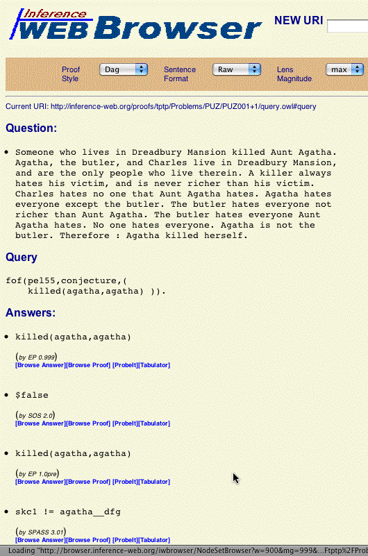

Browsing the TSTP Proofs

Capabilities
- Listings of TSTP domains → problems → systems' outputs
- Problems' questions, queries, and answers
- Links to the IW NodeSet browser
- Links to the IW Browser
- Links to ProbeIt!
- Links to the Tabulator (an XML RDF browser)